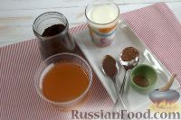
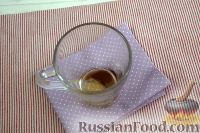

1. Подготовьте все необходимые продукты.

2. Наливаем в чашку рекомендованное количество жидкого меда и шоколадного соуса.

3. Вводим в массу пряности. Специи можно менять и дополнять по своему вкусу и усмотрению.
4. Варим кофе эспрессо.
5. Наливаем молоко в кастрюлю и подогреваем его, стараясь не доводить массу до кипения. Наливаем теплую массу в чашу блендера,
взбиваем его, пока не образуется пышная, воздушная пенка.
6. Добавляем кофе в чашку, предварительно процедив его через сито.
7. Наливаем молоко, сверху напитка выкладываем взбитую пенку.
8. Посыпаем рождественский кофе порошком какао, подаем незамедлительно. Приятного аппетита!!!